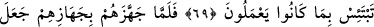
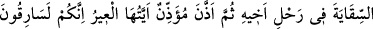
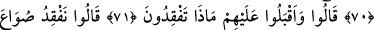
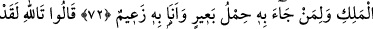
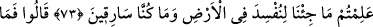
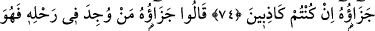
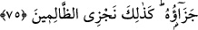

YÛSUF BÜNYAMİN BULUŞMASI
69. Yûsuf’un yanına girdiklerinde öz kardeşini yanına aldı ve “Bilesin ki ben senin
kardeşinim, onların yaptıklarına üzülme!” dedi.
70. (Yûsuf) onların yükünü hazırladığı zaman su tasını kardeşinin yükünün içine
koydu. (Kafile hareket ettikten) sonra bir tellal: “Ey kafile! Siz hırsızsınız!” diye
seslendi.
71. (Yûsuf’un kardeşleri) onlara dönerek: “Ne arıyorsunuz?” dediler.
72. “Kralın su tasını arıyoruz. Onu getirene bir deve yükü (buğday) var.” dediler.
(İçlerinden biri:) “Ben buna kefilim.” dedi.
73. (Kardeşler:) “Allah’a andolsun ki, bizim yeryüzünde fesat çıkarmak için
gelmediğimizi siz de biliyorsunuz. Biz hırsız da değiliz.” dediler.
74. (Yûsuf’un adamları) dediler ki: “Peki, siz yalancıysanız bunun cezası nedir?”
75. (Onlar:) “Onun cezası, kayıp eşya kimin yükünde bulunursa işte o (şahsa el
koymak) onun cezasıdır. Biz zâlimleri böyle cezalandırırız.” dediler.
“Yûsuf ’un yanına girdiklerinde” Yâkub’un oğulları Yûsuf’un yanına varıp tahtgâhına
ulaştılar. Yûsuf taht üzerine oturmuş ve yüzünden perdeyi kaldırmıştı. Yûsuf onlara:
–“Kimsiniz?” diye sordu.
Onlar:
–“Kenanlıyız. Bize biraderimizi getirmemizi buyurmuştunuz. Onu babasından istedik.
Onu koruyacağımıza söz verip yemin ederek getirdik.” dediler.
Yûsuf onlara:
–“Güzel bir davranışta bulundunuz, benden de aynı karşılığı göreceksiniz. Buyurun